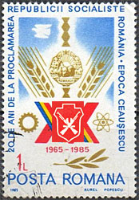
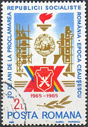
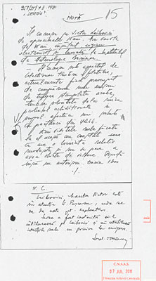
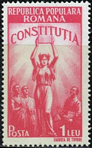
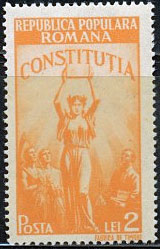
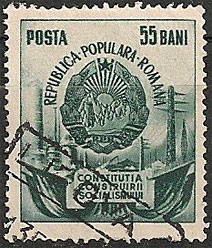

SECURITATE AND PHILATELY IN COMMUNIST ROMANIA
The Securitate (pronounced [sekuri'tate], Romanian for Security; official full name Departamentul Securitatii Statului, Department of State Security) was the secret police agency of Communist Romania. Founded on August 30, 1948, with help from the Soviet NKVD, the Securitate was abolished in December 1989, shortly after the president Nicolae Ceausescu was ousted.
The Securitate was, in proportion to Romania's population, one of the largest secret police forces in the Eastern bloc. The first budget of the Securitate in 1948 stipulated a number of 4,641 positions, of which 3,549 were filled by February 1949 ... By 1951, the Securitate's staff had increased fivefold, while in January 1956, the Securitate had 25,468 employees. Under the regime of Nicolae Ceausescu, the Securitate employed some 11,000 agents and had a half-million informers, thia for a country with a population of 22 million by 1985. Under Ceausescu, the Securitate was one of the most brutal secret police forces in the world, responsible for the arrests and deaths of thousands of people.


Note: the missing Securitate coat of arms were added by the author of this site. The crossed Kalashnikovs are perfectly reminiscent of what is seen on the flags of some African countries; see this page.
In the 1980s, the Securitate launched a massive campaign to stamp out dissent in Romania, manipulating the country's population with vicious rumors (such as supposed contacts with Western intelligence agencies), machinations, frameups, public denunciations, encouraging conflict between segments of the population, public humiliation of dissidents, toughened censorship and the repression of even the smallest gestures of independence by intellectuals. Often the term "intellectual" was used by the Securitate to describe dissidents with higher education, such as college and university students, writers, directors and scientists who opposed the philosophy of the Communist party. Source

"What's a nice kid like you doing in a world like this"?

Because the Romanian post hasn't issued stamps dedicated to Securitate forces (thus preventing the users spitting on the wrong side of the stamp), I show a document received by Securitate in 1980 from one of its numerous informants, a stamp collector with the code name "Sergiu." This document is one of many that belong to the file that Securitate gathered over the years about me. I received in September 2011, on personal demand, a copy of the file, containing this document too, from the C.N.S.A.S. (Consiliul National pentru Studierea Arhivelor Securitatii - National Council for Studying the Securitate Archives).
949/ST/4.II.1980
"Sergiu"NOTE
I know Victor for about 15 years. He is 35 years old, married, electronic engineer, and he works at the Meteorology Institute Baneasa.
I know him as a collector of philatelic stamps, he being at present interested in buying some cancelled stamp issues from Arabic countries, stamps purchased from me, probably in order to exchange them with some partners from USSR.
From my visits that I made to him I found out that he has a relatively modest flat and that he doesn't seem possessing valuable objects. But he is in possession of a car Dacia 1300.
...
I haven't reproduced the second page of the note, in which the informant speaks, among others, about my relatives in France. I have only extracted a note, added by a Lieutenant-Colonel (so important I was for them...), that informs that I am in the attention of the Lieutenant Puscasu, to whom will be sent a note for the operation. The source was instructed to meet me and to find out if I intend to emigrate.
Here is the place to remember those many letters that my philatelic friends from abroad sent to me, letters that were obviously opened and closed again by the Securitate workers, some stamps found inside having often suffered during their barbaric processing. All this happened despite of the fact that the secrecy of correspondence was guaranteed by the successive Romanian constitutions. For example by the constitution of 1965 (no stamp issued), art. 33, that guaranties the secret of correspondence and of telephone calls. But then why is my Securitate file full of transcriptions of my intercepted telephone conversations?



Just to finally mention that information provided by Securitate to my employer, pertaining to my relatives abroad, contacts to foreigners, philatelic activity, no membership of communist party, etc., were the reasons why my professional advancement in R&D was totally blocked. The general lack of freedom, the mentioned blocking and the permanent feeling of having the Securitate on my footsteps were the reasons why, already aged 39, I left for good the communist Romania, together with my wife and with my then three years old daughter.
If you wish to contact me by e-mail, please click here (take out SPAAM).